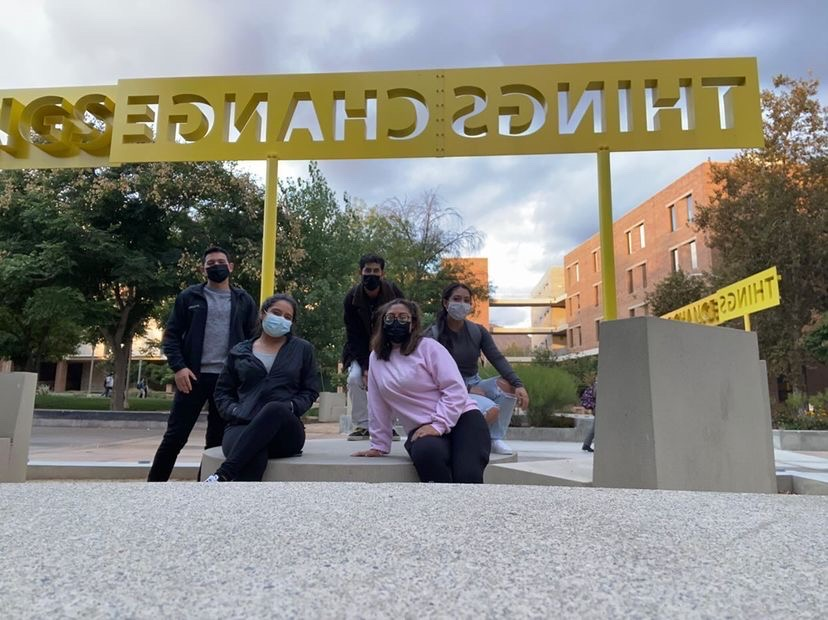
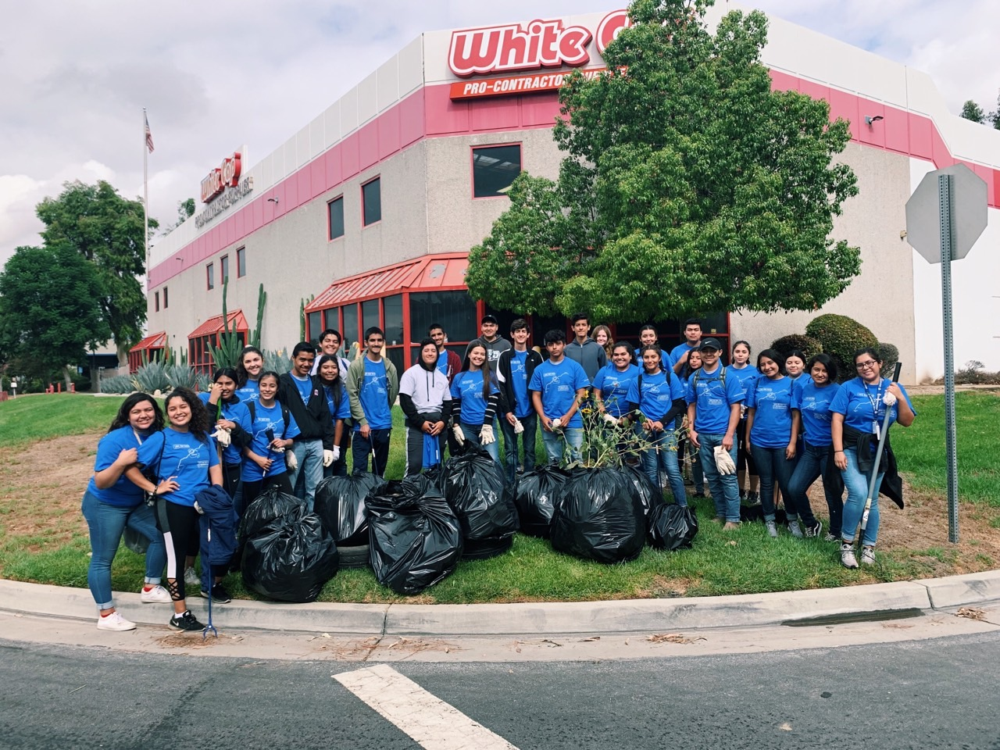
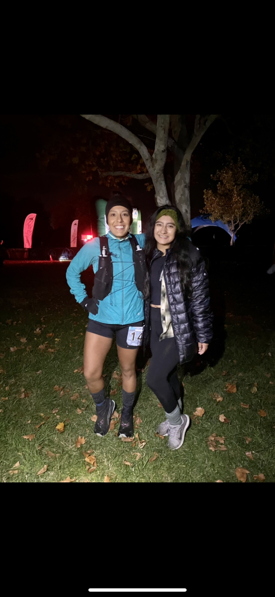
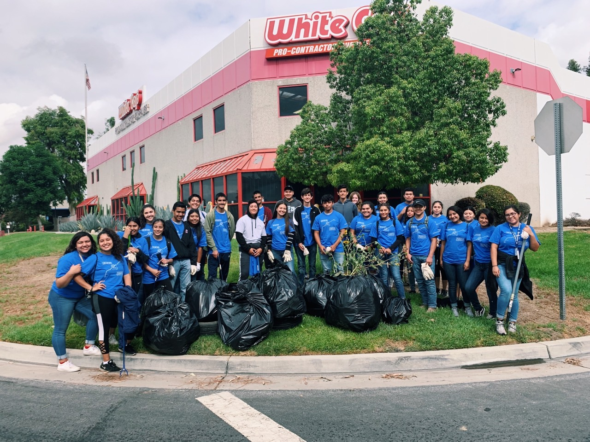
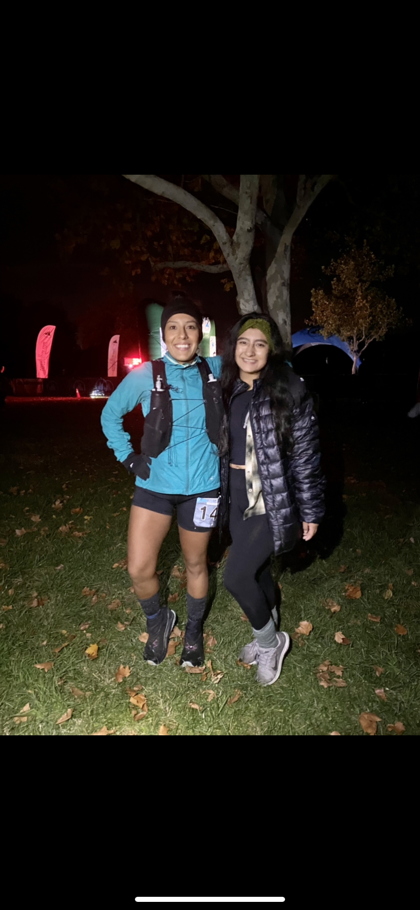

Jameelah Gonzalez
My career goal is to graduate with a degree in biology. With my degree, I intend to pursue my advancement in medical education by attending Physician Assistant School. My desire to have a significant impact on my community is a dictating factor, which underlines why I want to become a Physician Assistant and support those in need. My anticipated role in society after I graduate is to work in a hospital in my community, and then I want to fulfill my life goal. My goal is to help my community within the weak healthcare system which is supported by my lifelong commitment to helping people in my community. My determination is demonstrated by the struggles I’ve endured in my adolescence coping with anxiety, my brother’s gang affiliation, and economic insecurity.
My goal is to graduate with a degree in biology and attend Physician Assistant School. After I plan to work at a hospital and then fulfill my goal to bring change for children and families through financial empowerment for basic human needs by traveling with non-profit organizations. Coming from parents clueless about the U.S education system I lacked financial and academic guidance based on my lower socioeconomic status making me become independent and find the resources I needed; thus pursuing to help improve access to healthcare services in poorer countries.
I want to help improve the financial crisis of homelessness through my experiences of impoverishment by my brother's gang affiliation and violent crimes. My advocacy in the Youth Advisory Council to empower and improve the lives of Riverside County youth allowed me to participate in the Riverside Point in Time Count to survey the homeless population to accurately account for homelessness who had been denied federal funding to improve health and financial stability.
The oppoortunity will provide me with the necessities for success despite the various educational barriers that my lower socio-economic background has brought to me. Through my integration in this program, it will be a benefit in my education rt connections, such as tutoring and access to education specialists. It will be a major advantage in my educational career towards Physician Assistant School and will have an impact on my personal development by allowing me to become more engaged with students in college discussions, lectures, and in the student life of UCR. This will have a positive effect on my academic success through academic opportunties academic in college.
Experience
Multimedia Technolgy and Classrooms Operator
• Interacting with faculty and students
• Troubleshooting and assisting technological issues within classrooms
• Video recording, projector setup, sound system, classroom assistance experience
Latino Union Fundrasing Chair
•Coordinated fundraisers and social events to raise money for the organization implementing various activities from on campus to online events •Handled all administrative duties for the event •Organized fundraising activities and kept board members up to date on events on every weekly meeting •Planned and organized social events for Latino Union that increased its presence in local communities, social media presence, and outreach to UCR students
Cashier
•Interacted with customers by greeting guests, explained menu items and collected payments
•Ensured sanitation standards were followed by following Riverside County Health by cleaning tables, sandwich unit, and checked temperatures of different foods
•Restocking and prepping supplies throughout the day and for next morning
•Experience with:cash registers, credit card readers, Point of Sale (P.O.S) software
•Responsible for guaranteeing customer satisfaction, resolving customer complaints, and responding to any questions or comments from customers
•Handled money, served orders, worked drive-thru, cleaning supplies, and cleaned the building
Education
University of California, Riverside
Portfolio




 